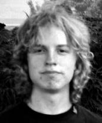

En presentation av de involverade
Ordförande/grundare
{kind=link}
Zrajm (också känd som maHvatlh).
Epost: zrajm@klingonska.org
Telefon:
Presentation: Jag har ägnat mig åt klingonska sedan i gymnasiet, och kan i dagsläget tillräckligt för att konversera, givet att den jag pratar med visar lite tålamod. (Det har visat sig att hörförståelse är något av det svåraste att öva upp när man inte har någon närheten att prata med.) :|
År 1998 grundades Klingonska Akademien av mig och Markus Persson. Sedan dess har jag hunnit ägna mig åt klingonska i otaliga former och har besökt flera av Klingonska språkinstitutets qep’a’mey (i USA och Europa) och av de tyska qepHommey som bägge hålls årligen.
Utöver att bygga och underhålla den här webbsidan, jag har hunnit författa en klingonsk fickordbok, och jag håller då och då kurser i, eller föreläser om, klingonska (på ett antal science fiction-kongresser under åren, men också på Medborgarskolan och på Uppsala Universitet).
Vid upprepade tillfällen har jag dessutom fått vara med i teve och radio – mest framträdande är kanske Klingonska Akademiens bidrag till SVTs Kobra då större delen av ett program ägnades åt ett inslag med Markus och mig, och då jag också fick coacha Christer Fuglesang i klingonska. Därtill har jag gästat Nyhetsmorgon (i TV4), Lantz i P3, och ZTV och vid olika tillfällen lokalradiostationer i Umeå och Uppsala.
Ständig sekreterare

Markus Persson (också känd som qa’naQ).
Epost: mp@klingonska.org
Presentation: Jag hade knappt tittat på Star Trek innan maHvatlh introducerade mig till tlhIngan Hol, men jag blev snart fängslad av det annorlunda språket, och man lär ju se Star Trek för att få se riktiga klingoner och höra riktig klingonska, så numera kan jag nog räknas som trekker. Jag är en av ”veteranerna” i Uppsala och sedan qep’a’ SochDIch i Philadelphia () kan jag konversera hjälpligt på klingonska. Min ambition är att ha bra uttal och framför allt en genuin klingonsk stil, något det slarvas med alltför ofta. Särskilt ogillar jag när ens modersmål smittar av sig på klingonskan. Nybörjare är alltid förlåtna, men man bör försöka tänka direkt i klingonska så mycket som möjligt.
Mitt huvudsakliga arbete i Klingonska Akademien rör lektionerna som jag och maHvatlh har ansvar för. Jag hjälper även till med fickordboken när jag orkar. Affixtabellerna har jag arbetat särskilt mycket med. Mina närmaste mål är att lära mig fler ord och att få klart några lektioner till. Någon gång ska jag också ta itu med projekt KLO.